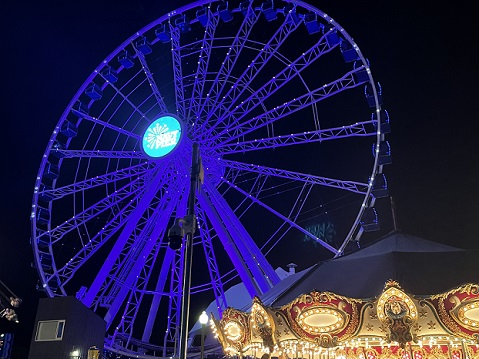
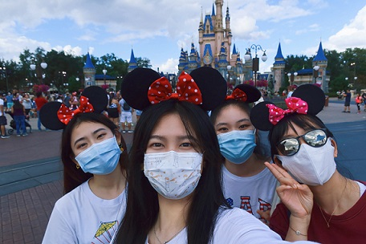

Navy Pier:I go to Navy Pier a lot, sometimes by day and sometimes by night. I love going there to watch fireworks and go on cruises. On the cruise, I can see the surrounding scenery and enjoy the sea breeze.
Lake Michigan:Lake Michigan is very close to the apartment I rent, and on nice days I go to the lake with my friends. I can see many interesting people and seagulls by the lake. I can play with water and sand, which makes me feel relaxed.
Downtown:Downtown is the place we go most often in Chicago. We often go there to shop, eat delicious food and enjoy the beautiful architecture. Every festival time the downtown decoration is very beautiful.

Orlando
Disney:I like Disneyland very much. It is said that The Disneyland in Orlando is the biggest one in the world. So during the winter vacation, MY friends and I went to Disney Resort in Orlando, and we did four parks in two days, which was really fun.
Universal:Universal Studios is a place I have always wanted to visit. There is only one Universal studio in China in Beijing, but it won't open until August 2021, and I will already be in the United States by then, unfortunately. So I also went to Universal Studios in Orlando, I love the Harry Potter park so much, I don't think one day is enough. I'd go there again if I had the chance.

Miami
I also went to Miami Beach, which was really comfortable, but I didn't have a video, so I found YouTube videos.